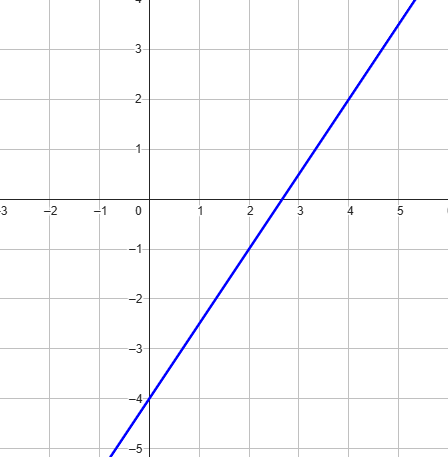

Compiti per casa
Esercizio 1
Scrivere l'equazione della retta rappresentata in figura

Soluzione
La retta in figura ha equazione \(y = \dfrac{3}{2}x - 4\)
Esercizio 2
Scrivere l'equazione della retta \(r\) passante per i punti
\(A(2\,;\,\,5)\,\,\) e \(\,\,B(5\,;\,\,-1)\)
Soluzione:
La retta \(s\) ha equazione \(y = -2x + 9\)
Esercizio 3
Consideriamo l'insieme di rette
\[
r_{k}:\,\, (k - 3)x + 4k\,y - 5 = 0
\]
Stabilire per quali valori di \(k\) la retta è parallela alla retta
\[
s:\,\, y = -2x - 2
\]
Soluzione:
La retta \(r_k\) è parallela alla retta \(s\) se scegliamo \(k = -\dfrac{3}{7}\)